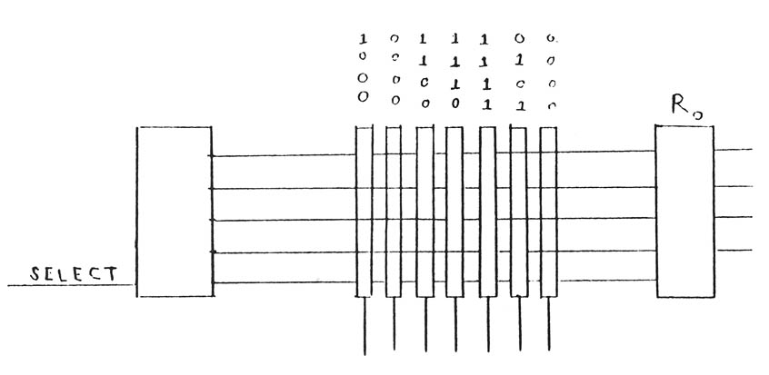

Computers in Spaceflight: The NASA
Experience
- - Chapter Two -
- - Computers On Board The Apollo
Spacecraft -
-
-
- The Apollo guidance computer:
Hardware
-
-
- [34] The Apollo
Guidance Computer was fairly compact for a computer of its time.
The CM housed the computer in a lower equipment bay, near the
navigator's station. Block II measured 24 by 12.5 by 6 inches,
weighed 70.1 pounds, and required 70 watts at 28 volts DC. The
machine in the lunar module was identical.
-
- Crew members could communicate with either
computer using display and keyboard units (DSKY, pronounced
"disky"). Two DSKYs were in the CM, one on the main control panel
and one near the optical instruments at the navigator's station.
In addition, a "mark" button was at the navigator's station to
signal the computer when a star fix was being taken. A single DSKY
was in the lunar module. The DSKYs were 8 by 8 by 7 inches and
weighed 17.5 pounds. As well as the DSKYs, the computer directly
hooked to the inertial measurement unit and, in the CM, to the
optical units.
-
- The choice of a 1 6-bit word size was a
careful one. Many scientific computers of the time used 24-bit or
longer word lengths and, in general, the longer the word the
better the precision of the calculations. MIT considered the
following factors in deciding the word length: (a) precision
desired for navigation variables, (b) range of input variables,
and (c) the instruction word format37. Advantages of a shorter word are simpler circuits
and higher speeds, and greater precision could be obtained by
using multiple words38. A single precision word of data consisted of 14
bits, with the other 2 bits as a sign bit (with a one indicating
negative) and a parity bit (odd parity). Two [35] adjacent
words yielded "double precision" and three adjacent, "triple
precision." To store a three-dimensional vector required three
double precision words39 . Data storage was as fractions (all numbers were
less than one)40. An instruction word used bits 15-13 (they were
numbered descending left to right) as an octal operation code. The
address used bits 12-1. Direct addressing was limited, so a "bank
register" scheme (discussed below) existed to make it possible to
address the entire memory 41.
-
- The Apollo computer had a simple packaging
system. The computer circuits were in two trays consisting of 24
modules. Each module had two groups of 60 flat packs with 72-pin
connectors. The flatpacks each held two logic
gates42. Tray A held the
logic circuits, interfaces, and the power supply, and tray B had
the memory, memory electronics, analog alarm devices, and the
clock, which had a speed of one megahertz43. All units of the computer were hermetically
sealed44. The memory in Block II consisted of a segment of
erasable core and six modules of core rope fixed memory. Both
types are discussed fully below.
-
- The Apollo computer used few flip-flop
registers due to size and weight
considerations45, but seven key registers in the computer did use
flip-flops:
-
- The accumulator, register 00000,
referenced as "A".
- The lower accumulator, 000001, L".
- The return address register, 000002,
"Q".
- The erasable bank register, 000003,
"EB".
- The fixed bank register, 000004,
"FB".
- The next address, 000005, "Z".
- The both bank register, 000006, "BB" (data
stored in EB and FB were automatically together
here)46.
-
- The use of bank registers enabled all of
the machine's memory to be addressed. The largest number that can
be contained in 12 bits is 8,192. The fixed memory of the Apollo
computer contained over four times that many locations. Therefore,
the memory divided into "banks" of core, and the addressing could
be handled by first indicating which bank and then the address
within the bank. For example, taking the metaphor "address"
literally, there are probably hundreds of "100 Main Street"
addresses in any state, but by putting the appropriate city on an
envelope, a letter can be delivered to the intended 100 Main
Street without difficulty.
-
- The computer banks were like the cities of
the analogy. The erasable bank register held just 3 bits that were
used to extend the direct [36] addressing
of the erasable memory to its "upper" region, and the fixed bank
register held 5 bits to indicate which core rope bank to address.
In addition, for the addresses needing a total of 16 bits, a
"super bank bit" could be stored and concatenated to the fixed
bank data and the address bits in the instruction
word47. This scheme made it possible to handle the
addressing using a 1 6-bit word, but it placed a greater burden on
the programmers, who, in an environment short of adequate tools,
had to attend to setting various bit codes in the instructions to
indicate the use of the erasable bank, fixed bank, or super bank
bit. Although this simplified the hardware, it increased the
complexity of the software, an indication that the importance of
the software was not fully recognized by the designers.
-
- To further reduce size and weight, the
Apollo computer was designed with a single adder circuit, which
the computer used to update incremental inputs, advance the next
address register, modify specified addresses, and do all the
arithmetic48. The adder and
the 16 I/O channels were probably the busiest circuits in the
machine.
-
-
- Memory
-
-
- The story of memory in the Apollo computer
is a story of increasing size as mission requirements developed.
In designing or purchasing a computer system for a specific
application, the requirements for memory are among the most
difficult to estimate. NASA and its computer contractors have been
consistently unable to make adequate judgments in this area.
Apollo's computer had both permanent and erasable memory, which
grew rapidly over initial projections.
-
- Apollo's computer used erasable merry
cells to store intermediate results of calculations, data such as
the location of the spacecraft, or as registers for logic
operations. In Apollo, they also contained the data and routines
needed to ready the computer for use when it was first turned on.
Fixed memory contained programs that did not need to be changed
during the course of a mission. The cycle times of the computer's
memories were equal for simplicity of
operation49.
-
- MIT's original design called for just 4K
words of fixed memory and 256 words of erasable (at the time, two
computers for redundancy were still under
consideration)50. By June 1963, the figures had grown to 10K of
fixed and 1K of erasable51. The next jump was to 12K of fixed, with MIT still
insisting that the memory requirement for an autonomous lunar
mission could be kept under 16K 52! Fixed memory leapt to 24K and then finally to 36K
words, and erasable memory had a final configuration of 2K
words.
-
- Lack of memory caused constant and
considerable software [37] development
problems, despite the increase of fixed memory 18 times over
original estimates and erasable memory 16 times. Part of the
software difficulties stemmed from functions and features that had
to be dropped because of program size considerations, and part
because of the already described addressing difficulties. If the
original designers had known that so much memory would be needed,
they might not have chosen the short word size, as a 24-bit word
could easily directly address a 36K bank, with enough room for a
healthy list of instruction codes.
-
- One reason the designers underestimated
the memory requirements was that NASA did not provide them with
detailed specifications as to the function of the computer. NASA
had established a need for the machine and had determined its
general tasks, and MIT received a contract based on only a short,
very general requirements statement in the request for band. The
requirements started changing immediately and continued to change
throughout the program. Software was not considered a driving
factor in the hardware design, and the hardware requirements were,
at any rate, insufficient.
-
- The actual composition of the memory was
fairly standard in its erasable component but somewhat unique in
its fixed component. The erasable memory consisted of
coincident-current ferrite cores similar to those on the Gemini
computer, and the fixed memory consisted of core rope, a
high-density read-only memory using cores of similar material
composition as the erasable memory but of completely different
design. MIT adopted the use of core rope in the original Mars
probe computer design and carried it over to the
Apollo53. Chief advantage of the core rope was that it could
put more information in less space, with the attendant
disadvantages that it was difficult to manufacture and the data
stored in it were unchangeable once it left the factory (see Box
2-1).
- [38] Box 2-1:
Core Rope: A Unique Data Storage Device
-
- Each core in an erasable memory could
store one bit of information, and each core in the core rope fixed
memory could store four words of information. In the erasable
memory, cores are magnetized either clockwise or counterclockwise,
thus indicating the storage of either a one or a zero. In fixed
memory, each core functions as a miniature transformer, and up to
64 wires (four sets of 1 6-bit words) could he connected to each
core. If a wire passed through a particular core, a one would be
read. If a particular wire bypassed the core, a zero would he
read. For example, to store the data word 10010001000011 1 1 in a
core, the first, fourth, eighth, and thirteenth through sixteenth
wires would pass through that core, the rest would bypass it. A
2-bit select code would identify which of the four words on a core
was being read, and the indicated 16 bits would be sent to the
appropriate register54. In this way. up to 2~000 bits could he stored in a
cubic inch55.
-
- The computer contained core rope arranged
in six modules, and each module contained 6,144 1 6-bit
words56. The modules further divided into "banks" of 1,024
words The first two banks were called the "fixed-fixed memory" and
could he directly addressed by 12 bits in a instruction word. The
remaining 34 were addressable as described in the text, using the
5-bit contents of the fixed bank register and the 10 bits in a
instruction word57.
- The use of core rope constrained NASA's
software developers. Software to be stored on core rope had to be
delivered months before a scheduled mission so that the rope could
be properly manufactured and tested. Once manufactured, it could
not be altered easily since each sealed module required rewiring
to change bits. The software not only had to be finished long in
advance, but it had to be perfect.
-
- Even though common sense indicates that it
is advantageous to complete something as complex and important as
software long before a mission so that it can be used in
simulators and tested in various other ways, software is rarely
either on time or perfect. Fortunately for the Apollo program, the
nature of core rope put a substantial amount of pressure on MIT's
programmers to do it right the first time. Unfortunately, the
concept of "bug"-free software was alien to most programmers of
that era. Programming was a fully iterative process of removing
errors. Even so, many "bugs" would carry over into a delivered
product due to unsophisticated testing techniques. Errors found
before a particular system of rope was complete could be fixed at
the factory58, but most others had to be endured. Raytheon, the
subcontractor that built the ropes, could eliminate hardwiring
errors introduced during manufacture by testing the rope modules
against the....
-
-
-
[39]
- 
- Figure 2-1. This diagram shows the
principle behind core rope. Suppose that the data shown above the
cores in the drawing is to be stored in the specific core. Thus
1000 is stored in the first core on the left by attaching the top
wire from the select circuit to the core and bypassing it with the
next three wires. When that core is selected for reading, the wire
attached to the core will indicate a "one" because all cores in a
rope are permanently charged as ones; the wires bypassing the core
will indicate zeroes.
-
-
-
- .....delivery tape of the programs. The
company built a device to do this59.
-
-
-
- Production Problems and
Testing
-
-
- Development and production of the Apollo
guidance, navigation, and control system reflected the overall
speed of the Apollo program. Design of the system began in the
second quarter of 1961, and NASA installed a Block I version in a
spacecraft on September 22, 1965. Release of the original software
(named CORONA) was in January 1966, with the first flight on
August 25, 1966
60. Less than 3 years after that, designers achieved
the final program objective. Even though fewer than two dozen
spacecraft flew, NASA authorized the building of 75 computers and
138 DSKYs. Fifty-seven of the computers and 102 of the crew
interfaces were of the Block II design 61. This represents a considerable production for a
special-purpose computer of the type used in Apollo. The need to
quickly build high-quality, high-reliability computers taxed the
abilities of Raytheon.
-
- Through AC Electronic Circuits (contractor
for the entire guidance system), Raytheon was chosen to build the
computers MIT had designed largely because of its Polaris
experience, but it had [40] never built
a computer as complex as the one for Apollo. The Polaris machine
was much simpler. Despite the use of experienced Polaris
personnel, Raytheon's production division for the Apollo computer
went from 800 to 2,000 employees in a year's time in order to
handle the increased difficulties and speed of
production62.
-
- Rapid growth, underestimation of
production requirements, and reliability problems dogged Raytheon
throughout the program. Changes in design made by MIT in late 1962
caused the company its initial trouble. The original request for
proposal had featured Polaris techniques, so Raytheon bid low,
expecting to use the same tools and production line for the Apollo
machine. The changes in component types and memory size caused
cost estimates to nearly double, resulting in considerable
friction with NASA63. NASA was also worried when two computers and fully
50% of the Block I DSKYs failed vibration
tests64. These failures turned out to be largely caused by
contaminated flat packs and DSKY relays. Particles would shake
loose during vibration testing65. The Block II computers would not work at first due
to excessive signal propagation time in the micrologic
interconnection matrix. The solution was to switch from nickel
ribbon connectors to a circuit board, causing an increase of
$500,000 in production costs66.
-
- These sorts of problems caused the Manned
Spacecraft Center to authorize a complete design review of the AGC
in February 1966. The lack of adequate support documentation was
found to be the most significant fault of the Block II
computer67. This sort of problem is usually the result of
speeding up development to the point at which changes are not
adequately documented.
-
- Continuous and careful attention to
reliability led to the discovery of problems. Builders
flight-screened components lot by lot68. Post-production hardware tests included vibration,
shock, acceleration, temperature, vacuum, humidity, salt fog, and
electronic noise.69 As D.C. Fraser, an engineer on the project, later
remarked, "reliability of the Apollo computer was bought with
money" 70.